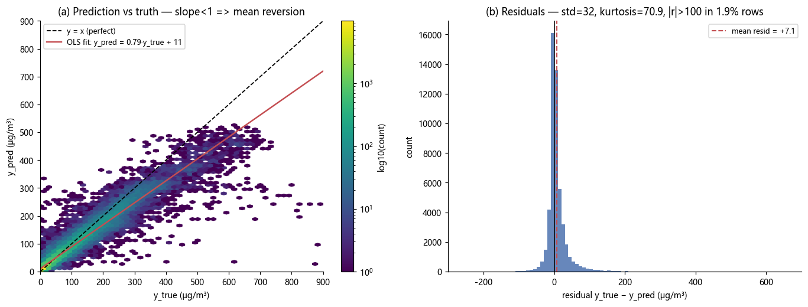
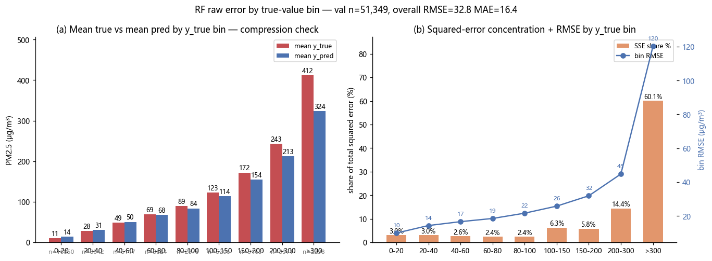
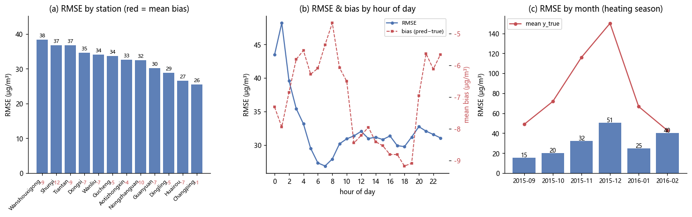

本报告由
scripts/render_error_analysis.py从reports/error_analysis_numbers.json程序化渲染, 全部数值直接取自该 JSON,未做任何重算或补充(数值按统一规则四舍五入显示)。 数据范围: 验证集 12 个站点、逐小时, 覆盖 2015-09 → 2016-02(供暖季), 共 51349 行; 目标: 预测下一小时 PM2.5, 误差按 真实值−预测值 或 预测值−真实值 口径见各表说明。
| 指标 | 数值 | 指标 | 数值 |
|---|---|---|---|
| 样本数 n | 51349 | 预测均值 (μg/m³) | 76.06 |
| RMSE (μg/m³) | 32.80 | 预测最大值 | 525.93 |
| MAE (μg/m³) | 16.38 | 预测 >600 行数 | 0 |
| RMSE / MAE | 2.00 | 真实均值 (μg/m³) | 83.15 |
| Pearson 相关 | 0.96 | 真实中位数 | 42 |
| OLS 斜率 | 0.79 | 真实标准差 | 101.98 |
| OLS 截距 | 10.52 | 真实最大值 | 999 |
| 真实 >600 行数 | 163 |
预测均值低于真实均值,OLS 斜率小于 1、截距大于 0:高值段系统性低估、低值段被拉高,详见第二节分箱表。
| 统计量 | 数值 | 分位数 | 数值 |
|---|---|---|---|
| 均值 | 7.09 | P1 | -49.97 |
| 标准差 | 32.03 | P5 | -22.05 |
| 偏度 | 4.93 | P25 | -4.86 |
| 峰度 | 70.92 | P50 | 1.13 |
| 负残差占比 | 45.35% | P75 | 12.34 |
| 残差 | >100 占比 | 1.91% | |
| 残差 | >200 占比 | 0.33% |
残差均值接近零但右偏(偏度 4.93)、峰度极高(70.92),说明绝大多数误差很小,尾部由少数极端低估行贡献(见第五节 SSE 集中度)。

图 1: 残差分布与预测-真实散点(fig_e2_residuals.png)
按真实 PM2.5 值分 9 箱。偏差 = 预测均值 − 真实均值(正 = 平均高估,负 = 平均低估);偏差率 = 偏差 / 真实均值;SSE 占比 = 该箱平方误差和占全验证集比例。
| 真实值区间 | 样本数 | 行占比 | 真实均值 | 预测均值 | 偏差 | 偏差率 | RMSE | MAE | SSE 占比 |
|---|---|---|---|---|---|---|---|---|---|
| 0-20 | 16850 | 32.81% | 10.52 | 13.76 | 3.24 | 30.80% | 9.92 | 5.02 | 3.00% |
| 20-40 | 8042 | 15.66% | 28.21 | 30.68 | 2.48 | 8.78% | 14.35 | 8.99 | 3.00% |
| 40-60 | 5117 | 9.97% | 48.86 | 50.39 | 1.53 | 3.12% | 16.65 | 11.87 | 2.57% |
| 60-80 | 3824 | 7.45% | 68.95 | 67.75 | -1.20 | -1.73% | 18.53 | 13.34 | 2.38% |
| 80-100 | 2878 | 5.60% | 89.13 | 83.87 | -5.26 | -5.90% | 21.66 | 15.38 | 2.44% |
| 100-150 | 5206 | 10.14% | 122.97 | 113.83 | -9.14 | -7.43% | 25.82 | 19.18 | 6.28% |
| 150-200 | 3163 | 6.16% | 172.12 | 154.33 | -17.79 | -10.34% | 31.93 | 25.10 | 5.84% |
| 200-300 | 3971 | 7.73% | 242.80 | 212.53 | -30.27 | -12.47% | 44.79 | 35.64 | 14.42% |
| >300 | 2298 | 4.48% | 411.96 | 323.77 | -88.19 | -21.41% | 120.18 | 90.38 | 60.08% |

图 2: 按真实浓度分箱的误差构成(fig_e1_error_bins.png)
SSE 高度集中: 行占比最高的区间是 0-20(32.81% 的行),只贡献 3.00% 的 SSE;而 SSE 占比最高的区间 >300 仅占 4.48% 的行,却贡献 60.08% 的 SSE,其平均偏差达 -88.19(低估)。
站点名沿用 JSON 中的英文原名(北京 12 个国控站点)。偏差 = 预测均值 − 真实均值;RMSE/标准差 < 1 表示站点内误差小于其自身波动幅度。
| 站点 | 样本数 | 真实均值 | 预测均值 | 偏差 | RMSE | RMSE/真实标准差 | MAE | Pearson |
|---|---|---|---|---|---|---|---|---|
| Wanshouxigong | 4264 | 92.54 | 83.48 | -9.06 | 38.34 | 0.34 | 18.04 | 0.96 |
| Shunyi | 4305 | 85.96 | 73.78 | -12.19 | 36.81 | 0.35 | 18.27 | 0.96 |
| Tiantan | 4318 | 86.87 | 77.48 | -9.39 | 36.80 | 0.35 | 17.70 | 0.96 |
| Dongsi | 4329 | 89.77 | 82.30 | -7.47 | 34.66 | 0.31 | 17.29 | 0.96 |
| Wanliu | 4313 | 82.90 | 75.94 | -6.97 | 34.04 | 0.34 | 16.95 | 0.96 |
| Gucheng | 4267 | 90.83 | 85.49 | -5.35 | 33.63 | 0.31 | 18.19 | 0.96 |
| Aotizhongxin | 4311 | 87.13 | 83.00 | -4.13 | 32.65 | 0.31 | 16.10 | 0.96 |
| Nongzhanguan | 4215 | 91.07 | 81.06 | -10.01 | 32.47 | 0.30 | 17.33 | 0.97 |
| Guanyuan | 4334 | 86.01 | 79.06 | -6.94 | 30.20 | 0.29 | 15.36 | 0.97 |
| Dingling | 4274 | 64.79 | 59.96 | -4.83 | 28.88 | 0.35 | 13.60 | 0.95 |
| Huairou | 4269 | 72.69 | 65.25 | -7.44 | 26.55 | 0.31 | 14.25 | 0.96 |
| Changping | 4150 | 66.70 | 65.53 | -1.16 | 25.54 | 0.33 | 13.44 | 0.94 |

图 3: 站点、小时、月份三个维度的误差结构(fig_e3_error_structures.png)
| 小时 | 样本数 | 真实均值 | 预测均值 | 偏差 | RMSE | SSE 占比 | 行占比 |
|---|---|---|---|---|---|---|---|
| 0 | 2153 | 91.73 | 84.41 | -7.32 | 43.48 | 7.37% | 4.19% |
| 1 | 2152 | 89.63 | 81.68 | -7.95 | 48.22 | 9.06% | 4.19% |
| 2 | 2133 | 84.89 | 78.04 | -6.85 | 39.58 | 6.05% | 4.15% |
| 3 | 2130 | 80.23 | 74.42 | -5.81 | 35.44 | 4.84% | 4.15% |
| 4 | 2145 | 75.51 | 69.97 | -5.53 | 33.16 | 4.27% | 4.18% |
| 5 | 2150 | 72.88 | 66.60 | -6.28 | 29.51 | 3.39% | 4.19% |
| 6 | 2139 | 71.90 | 65.80 | -6.10 | 27.33 | 2.89% | 4.17% |
| 7 | 2152 | 71.81 | 66.45 | -5.35 | 26.87 | 2.81% | 4.19% |
| 8 | 2149 | 73.41 | 68.75 | -4.67 | 27.92 | 3.03% | 4.19% |
| 9 | 2137 | 76.27 | 70.19 | -6.08 | 30.18 | 3.52% | 4.16% |
| 10 | 2120 | 77.54 | 71.03 | -6.51 | 30.93 | 3.67% | 4.13% |
| 11 | 2102 | 78.98 | 70.53 | -8.45 | 31.36 | 3.74% | 4.09% |
| 小时 | 样本数 | 真实均值 | 预测均值 | 偏差 | RMSE | SSE 占比 | 行占比 |
|---|---|---|---|---|---|---|---|
| 12 | 2124 | 79.08 | 70.87 | -8.21 | 32.04 | 3.95% | 4.14% |
| 13 | 2117 | 78.54 | 70.59 | -7.95 | 30.97 | 3.68% | 4.12% |
| 14 | 2127 | 78.01 | 69.60 | -8.41 | 31.17 | 3.74% | 4.14% |
| 15 | 2136 | 78.04 | 69.51 | -8.54 | 30.82 | 3.67% | 4.16% |
| 16 | 2141 | 80.52 | 71.71 | -8.81 | 31.36 | 3.81% | 4.17% |
| 17 | 2142 | 84.20 | 75.39 | -8.81 | 29.92 | 3.47% | 4.17% |
| 18 | 2137 | 91.01 | 81.84 | -9.17 | 29.76 | 3.43% | 4.16% |
| 19 | 2153 | 96.03 | 86.94 | -9.09 | 31.19 | 3.79% | 4.19% |
| 20 | 2156 | 98.01 | 91.05 | -6.95 | 32.74 | 4.18% | 4.20% |
| 21 | 2142 | 97.57 | 91.93 | -5.64 | 32.07 | 3.99% | 4.17% |
| 22 | 2158 | 95.94 | 89.82 | -6.12 | 31.58 | 3.90% | 4.20% |
| 23 | 2154 | 93.34 | 87.68 | -5.66 | 31.06 | 3.76% | 4.19% |
0–3 时合计 8568 行,占全部行的 16.69%,却贡献了 27.31% 的 SSE;该时段 RMSE 为 41.97(高于总体 32.80),真实均值 86.64。
| 月份 | 样本数 | 真实均值 | 预测均值 | 偏差 | RMSE |
|---|---|---|---|---|---|
| 2015-09 | 8436 | 48.95 | 47.22 | -1.73 | 15.24 |
| 2015-10 | 8597 | 71.86 | 70.50 | -1.36 | 20.12 |
| 2015-11 | 8425 | 115.99 | 103.58 | -12.41 | 32.11 |
| 2015-12 | 8765 | 150.15 | 128.69 | -21.46 | 50.54 |
| 2016-01 | 8856 | 66.74 | 64.29 | -2.45 | 24.56 |
| 2016-02 | 8270 | 42.90 | 40.05 | -2.85 | 40.24 |
验证集误差高度集中于高浓度段:真实值 ≥150 的行占 18.37%,却贡献了 80.33% 的平方误差;≥200 的行占 12.21% 贡献 74.49%;≥300 的行占 4.48% 贡献 60.08%。
| 真实值条件 | 样本数 | 行占比 | SSE 占比 | RMSE | MAE | 真实均值 | 预测均值 | 偏差 |
|---|---|---|---|---|---|---|---|---|
| y_true ≥ 150 | 9432 | 18.37% | 80.33% | 68.60 | 45.44 | 260.31 | 220.11 | -40.20 |
| y_true ≥ 200 | 6269 | 12.21% | 74.49% | 81.03 | 55.71 | 304.81 | 253.30 | -51.50 |
| y_true ≥ 300 | 2298 | 4.48% | 60.08% | 120.18 | 90.38 | 411.96 | 323.77 | -88.19 |
各阈值段偏差均为负(低估),且阈值越高偏差绝对值越大:≥300 段平均低估 -88.19。
真实值 >600 的 163 行仅占全部行的 0.32%,却贡献了 24.26% 的 SSE;该段真实均值 660.97、预测均值仅 414.80,RMSE 高达 286.75。
绝对误差最大的前 1% 行(513 行,最小绝对误差 133.47)贡献了 47.52% 的 SSE,其真实均值达 484.78;前 5% 行(2567 行,最小绝对误差 59.79)贡献了 75.24% 的 SSE。
检出能力: 真实值 ≥150 的 9432 行中,预测值 ≥150 的占 83.00%,预测值 <100 的仅占 1.08%(平均预测值 220.11)。
清洁日误报: 真实值 ≤50 的 27951 行中,预测值 >100 的占 0.30%,预测值 >150 的占 0.07%。
比较全体 / 真实 ≥150 / 真实 ≥300 / |误差|>75 / 真实 ≥150 且被低估 五类行 (under_pred_ge150 为真实值 ≥150 且预测低于真实的行)的平均污染物与气象输入。
| 输入变量 | 全体 | 真实 ≥150 | 真实 ≥300 | |误差|>75 | 真实≥150且被低估 | |---|---|---|---|---|---| | PM10 (μg/m³) | 96.28 | 267.08 | 418.42 | 377.26 | 160.06 | | SO2 (μg/m³) | 12.82 | 25.88 | 29.29 | 32.68 | 21.75 | | NO2 (μg/m³) | 52.12 | 99.51 | 130.32 | 117.62 | 76.89 | | CO (μg/m³) | 1501.98 | 3751.71 | 5630.98 | 5306.48 | 2374.42 | | O3 (μg/m³) | 34.45 | 20.29 | 19.16 | 12.49 | 20.69 | | 气温 (℃) | 5.56 | 4.44 | 2.56 | 0.34 | 4.88 | | 风速 (m/s) | 1.80 | 1.05 | 1.04 | 1.18 | 1.17 | | 露点 (℃) | -4.04 | 0.58 | -0.30 | -3.70 | -0.20 | | 气压 (hPa) | 1018.95 | 1017.58 | 1016.33 | 1017.34 | 1018.48 | | 降雨 (mm) | 0.04 | 0.0085 | 0.0012 | 0.04 | 0.0031 | | 样本数 n | 51349 | 9432 | 2298 | 1683 | 1603 | | 真实均值 | 83.15 | 260.31 | 411.96 | 376.40 | 174.88 | | 预测均值 | 76.06 | 220.11 | 323.77 | 273.89 | 129.29 |
误差大(真实 ≥150 / ≥300 / |误差|>75)的行对应显著更高的 PM10、SO2、NO2、CO 与更低的风速:高浓度静稳天气正是低估集中的场景。
| 数据集 | 样本数 | 均值 | 真实 >150 占比 | 真实 >300 占比 |
|---|---|---|---|---|
| 训练集 | 257927 | 79.81 | 14.96% | 1.80% |
| 验证集 | 51349 | 83.15 | 18.20% | 4.45% |
验证集(供暖季)的重污染占比明显高于训练集(>150: 14.96% vs 18.20%;>300: 1.80% vs 4.45%),分布漂移放大了高值段误差。
以下为验证期内真实均值最高的 8 个污染日(日级事件,按日期聚合)。
| 日期 | 当日行数 | 真实均值 | 预测均值 |
|---|---|---|---|
| 2016-02-08 | 84 | 559.65 | 252.24 |
| 2015-12-25 | 270 | 487.40 | 370.91 |
| 2015-12-01 | 276 | 473.04 | 365.04 |
| 2015-11-30 | 194 | 429.95 | 325.23 |
| 2015-12-24 | 67 | 394.03 | 239.44 |
| 2015-12-26 | 211 | 340.25 | 318.47 |
| 2015-12-30 | 47 | 334.49 | 283.35 |
| 2015-12-22 | 240 | 324.05 | 263.60 |
最极端的污染日 2016-02-08 真实均值 559.65,而当日平均预测仅 252.24 —— 事件级别的大幅低估是整体误差的主要来源之一。
| 时间 | 站点 | 真实值 | 预测值 | 绝对误差 |
|---|---|---|---|---|
| 2016-02-08 00:00:00 | Dingling | 881 | 25.26 | 855.74 |
| 2016-02-08 01:00:00 | Changping | 882 | 97.17 | 784.83 |
| 2016-02-08 01:00:00 | Wanshouxigong | 999 | 228.32 | 770.68 |
| 2016-02-08 01:00:00 | Shunyi | 941 | 250.58 | 690.42 |
| 2016-02-08 01:00:00 | Wanliu | 957 | 299.22 | 657.78 |
| 2016-02-08 01:00:00 | Aotizhongxin | 898 | 241.09 | 656.91 |
| 2016-02-08 00:00:00 | Wanshouxigong | 826 | 192.20 | 633.80 |
| 2016-02-08 02:00:00 | Wanshouxigong | 857 | 243.77 | 613.23 |
| 2016-02-08 00:00:00 | Shunyi | 816 | 221.20 | 594.80 |
| 2016-02-08 02:00:00 | Tiantan | 821 | 241.41 | 579.59 |
| 场景 | RMSE (μg/m³) |
|---|---|
| 当前模型(基准) | 32.80 |
| 真实 ≥150 行误差减半 | 20.68 |
| 真实 ≥150 行误差清零 | 14.55 |
| 真实 ≥300 行误差减半 | 24.31 |
| 真实 ≥300 行误差清零 | 20.73 |
若真实 ≥150 的误差完全消除,总体 RMSE 可由 32.80 降至 14.55;仅处理 ≥300 段也可降至 20.73 —— 高值段是改进空间最大的方向。
按预测值分箱在校准集上估计乘法因子,再应用到时间上不重叠的评估集:
| 预测值区间 | 校准集样本数 | 校准因子 |
|---|---|---|
| 0-20 | 6561 | 0.99 |
| 20-40 | 5009 | 1.00 |
| 40-60 | 3184 | 1.01 |
| 60-80 | 2715 | 1.02 |
| 80-100 | 1906 | 1.06 |
| 100-150 | 2417 | 1.10 |
| 150-200 | 1356 | 1.10 |
| 200-300 | 1944 | 1.09 |
| >300 | 366 | 1.18 |
校准集: 25458 行(2015-09-01→2015-11-30);评估集: 25891 行(2015-12-01→2016-02-29,真实均值 87.36,原始预测均值 78.35)。校准集样本内 RMSE 为 20.56。
| 评估集指标 | 原始模型 | 分段校准后 | 变化 |
|---|---|---|---|
| RMSE (μg/m³) | 39.86 | 34.60 | -13.19% |
| MAE (μg/m³) | 18.75 | 16.30 | — |
在样本外评估集上,分段校准把 RMSE 从 39.86 降到 34.60(降幅 -13.19%),MAE 从 18.75 降到 16.30。
| 参照模型 | 样本数 | RMSE | MAE |
|---|---|---|---|
| Box-Cox 变换(反变换回原始尺度) | 51349 | 38.06 | 18.03 |
作为参照,以 Box-Cox 变换目标训练并在原始尺度评估的模型 RMSE 为 38.06(MAE 18.03),高于当前模型 32.80 / 16.38 的水平。
1. 误差集中于高浓度段与极端污染事件,应优先专项治理。 真实值 ≥150 的行仅占 18.37% 却贡献 80.33% 的 SSE;>600 的 163 行贡献 24.26% 的 SSE,当日真实均值最高的事件(2016-02-08)真实 559.65 vs 预测 252.24。建议: 针对重污染过程单独建模或加权(如对真实 ≥150 行做误差敏感的训练加权 / 上采样),并为极端事件构建阈值预警专用模型。
2. 夜间(0–3 时)误差偏高。 该时段行占 16.69% 却贡献 27.31% 的 SSE,RMSE 41.97 高于总体 32.80。建议: 增加夜间气象与逆温相关特征,或按小时分模型、给夜间段更大的误差权重。
3. 分段乘法校正在样本外有效,可继续沿用并扩展。 评估集 RMSE 由 39.86 降至 34.60(降幅 -13.19%),其中 >300 段的校准因子达 1.18;高值段假设场景也显示消除 ≥150 误差可将总体 RMSE 从 32.80 降至 14.55。建议: 在模型预测后叠加分段校准,并针对校准因子最大的高值段继续降低原始模型偏差。
注: 本报告数值均按 JSON 原值统一舍入显示(整数保持整数,其余保留两位小数,小于 0.01 的值保留四位小数);百分比字段在 JSON 中即已为百分数。
This report is programmatically rendered by
scripts/render_error_analysis.pyfromreports/error_analysis_numbers.json; all values are taken directly from that JSON without any recomputation or supplementation (values are displayed rounded according to a uniform rule). Data scope: validation set of 12 stations, hourly, covering 2015-09 → 2016-02 (heating season), 51349 rows in total; target: predict next-hour PM2.5. Error definitions follow 真值−预测值 (actual − predicted) or 预测值−真值 (predicted − actual) conventions as noted in each table.
| Metric | Value | Metric | Value |
|---|---|---|---|
| Sample count n | 51349 | Predicted mean (μg/m³) | 76.06 |
| RMSE (μg/m³) | 32.80 | Predicted max | 525.93 |
| MAE (μg/m³) | 16.38 | Rows with prediction >600 | 0 |
| RMSE / MAE | 2.00 | Actual mean (μg/m³) | 83.15 |
| Pearson correlation | 0.96 | Actual median | 42 |
| OLS slope | 0.79 | Actual std. dev. | 101.98 |
| OLS intercept | 10.52 | Actual max | 999 |
| Rows with actual >600 | 163 |
The predicted mean is below the actual mean; the OLS slope is less than 1 and the intercept greater than 0: high-value segments are systematically underestimated while low values are pulled upward — see the bin tables in Section 2.
| Statistic | Value | Quantile | Value |
|---|---|---|---|
| Mean | 7.09 | P1 | -49.97 |
| Std. dev. | 32.03 | P5 | -22.05 |
| Skewness | 4.93 | P25 | -4.86 |
| Kurtosis | 70.92 | P50 | 1.13 |
| Share of negative residuals | 45.35% | P75 | 12.34 |
| Share of |residual|>100 | 1.91% | P95 | 54.06 |
| Share of |residual|>200 | 0.33% | P99 | 127.58 |
The residual mean is near zero but right-skewed (skewness 4.93) with extremely high kurtosis (70.92), indicating that most errors are very small while the tails are driven by a few rows with extreme underestimation (see SSE concentration in Section 5).
Figure 1: Residual distribution and predicted-actual scatter (fig_e2_residuals.png)
Rows are split into 9 bins by actual PM2.5 value. Bias = predicted mean − actual mean (positive = average overestimation, negative = average underestimation); bias rate = bias / actual mean; SSE share = the bin's sum of squared errors as a share of the full validation set.
| Actual range | Sample count | Row share | Actual mean | Predicted mean | Bias | Bias rate | RMSE | MAE | SSE share |
|---|---|---|---|---|---|---|---|---|---|
| 0-20 | 16850 | 32.81% | 10.52 | 13.76 | 3.24 | 30.80% | 9.92 | 5.02 | 3.00% |
| 20-40 | 8042 | 15.66% | 28.21 | 30.68 | 2.48 | 8.78% | 14.35 | 8.99 | 3.00% |
| 40-60 | 5117 | 9.97% | 48.86 | 50.39 | 1.53 | 3.12% | 16.65 | 11.87 | 2.57% |
| 60-80 | 3824 | 7.45% | 68.95 | 67.75 | -1.20 | -1.73% | 18.53 | 13.34 | 2.38% |
| 80-100 | 2878 | 5.60% | 89.13 | 83.87 | -5.26 | -5.90% | 21.66 | 15.38 | 2.44% |
| 100-150 | 5206 | 10.14% | 122.97 | 113.83 | -9.14 | -7.43% | 25.82 | 19.18 | 6.28% |
| 150-200 | 3163 | 6.16% | 172.12 | 154.33 | -17.79 | -10.34% | 31.93 | 25.10 | 5.84% |
| 200-300 | 3971 | 7.73% | 242.80 | 212.53 | -30.27 | -12.47% | 44.79 | 35.64 | 14.42% |
| >300 | 2298 | 4.48% | 411.96 | 323.77 | -88.19 | -21.41% | 120.18 | 90.38 | 60.08% |
Figure 2: Error composition by bins of actual concentration (fig_e1_error_bins.png)
SSE is highly concentrated: the 0-20 range holds the largest row share (32.81% of rows) yet contributes only 3.00% of the SSE, while the >300 range — the largest SSE contributor — holds only 4.48% of rows yet contributes 60.08% of the SSE, with an average bias of -88.19 (underestimation).
Station names follow the original English names in the JSON (12 national control stations in Beijing). Bias = predicted mean − actual mean; RMSE/std. dev. < 1 indicates that within-station error is smaller than the station's own variability.
| Station | Sample count | Actual mean | Predicted mean | Bias | RMSE | RMSE/actual std. dev. | MAE | Pearson |
|---|---|---|---|---|---|---|---|---|
| Wanshouxigong | 4264 | 92.54 | 83.48 | -9.06 | 38.34 | 0.34 | 18.04 | 0.96 |
| Shunyi | 4305 | 85.96 | 73.78 | -12.19 | 36.81 | 0.35 | 18.27 | 0.96 |
| Tiantan | 4318 | 86.87 | 77.48 | -9.39 | 36.80 | 0.35 | 17.70 | 0.96 |
| Dongsi | 4329 | 89.77 | 82.30 | -7.47 | 34.66 | 0.31 | 17.29 | 0.96 |
| Wanliu | 4313 | 82.90 | 75.94 | -6.97 | 34.04 | 0.34 | 16.95 | 0.96 |
| Gucheng | 4267 | 90.83 | 85.49 | -5.35 | 33.63 | 0.31 | 18.19 | 0.96 |
| Aotizhongxin | 4311 | 87.13 | 83.00 | -4.13 | 32.65 | 0.31 | 16.10 | 0.96 |
| Nongzhanguan | 4215 | 91.07 | 81.06 | -10.01 | 32.47 | 0.30 | 17.33 | 0.97 |
| Guanyuan | 4334 | 86.01 | 79.06 | -6.94 | 30.20 | 0.29 | 15.36 | 0.97 |
| Dingling | 4274 | 64.79 | 59.96 | -4.83 | 28.88 | 0.35 | 13.60 | 0.95 |
| Huairou | 4269 | 72.69 | 65.25 | -7.44 | 26.55 | 0.31 | 14.25 | 0.96 |
| Changping | 4150 | 66.70 | 65.53 | -1.16 | 25.54 | 0.33 | 13.44 | 0.94 |
Figure 3: Error structure across the station, hour, and month dimensions (fig_e3_error_structures.png)
| Hour | Sample count | Actual mean | Predicted mean | Bias | RMSE | SSE share | Row share |
|---|---|---|---|---|---|---|---|
| 0 | 2153 | 91.73 | 84.41 | -7.32 | 43.48 | 7.37% | 4.19% |
| 1 | 2152 | 89.63 | 81.68 | -7.95 | 48.22 | 9.06% | 4.19% |
| 2 | 2133 | 84.89 | 78.04 | -6.85 | 39.58 | 6.05% | 4.15% |
| 3 | 2130 | 80.23 | 74.42 | -5.81 | 35.44 | 4.84% | 4.15% |
| 4 | 2145 | 75.51 | 69.97 | -5.53 | 33.16 | 4.27% | 4.18% |
| 5 | 2150 | 72.88 | 66.60 | -6.28 | 29.51 | 3.39% | 4.19% |
| 6 | 2139 | 71.90 | 65.80 | -6.10 | 27.33 | 2.89% | 4.17% |
| 7 | 2152 | 71.81 | 66.45 | -5.35 | 26.87 | 2.81% | 4.19% |
| 8 | 2149 | 73.41 | 68.75 | -4.67 | 27.92 | 3.03% | 4.19% |
| 9 | 2137 | 76.27 | 70.19 | -6.08 | 30.18 | 3.52% | 4.16% |
| 10 | 2120 | 77.54 | 71.03 | -6.51 | 30.93 | 3.67% | 4.13% |
| 11 | 2102 | 78.98 | 70.53 | -8.45 | 31.36 | 3.74% | 4.09% |
| Hour | Sample count | Actual mean | Predicted mean | Bias | RMSE | SSE share | Row share |
|---|---|---|---|---|---|---|---|
| 12 | 2124 | 79.08 | 70.87 | -8.21 | 32.04 | 3.95% | 4.14% |
| 13 | 2117 | 78.54 | 70.59 | -7.95 | 30.97 | 3.68% | 4.12% |
| 14 | 2127 | 78.01 | 69.60 | -8.41 | 31.17 | 3.74% | 4.14% |
| 15 | 2136 | 78.04 | 69.51 | -8.54 | 30.82 | 3.67% | 4.16% |
| 16 | 2141 | 80.52 | 71.71 | -8.81 | 31.36 | 3.81% | 4.17% |
| 17 | 2142 | 84.20 | 75.39 | -8.81 | 29.92 | 3.47% | 4.17% |
| 18 | 2137 | 91.01 | 81.84 | -9.17 | 29.76 | 3.43% | 4.16% |
| 19 | 2153 | 96.03 | 86.94 | -9.09 | 31.19 | 3.79% | 4.19% |
| 20 | 2156 | 98.01 | 91.05 | -6.95 | 32.74 | 4.18% | 4.20% |
| 21 | 2142 | 97.57 | 91.93 | -5.64 | 32.07 | 3.99% | 4.17% |
| 22 | 2158 | 95.94 | 89.82 | -6.12 | 31.58 | 3.90% | 4.20% |
| 23 | 2154 | 93.34 | 87.68 | -5.66 | 31.06 | 3.76% | 4.19% |
Hours 0–3 total 8568 rows — 16.69% of all rows — yet contribute 27.31% of the SSE; the RMSE for this period is 41.97 (above the overall 32.80), with an actual mean of 86.64.
| Month | Sample count | Actual mean | Predicted mean | Bias | RMSE |
|---|---|---|---|---|---|
| 2015-09 | 8436 | 48.95 | 47.22 | -1.73 | 15.24 |
| 2015-10 | 8597 | 71.86 | 70.50 | -1.36 | 20.12 |
| 2015-11 | 8425 | 115.99 | 103.58 | -12.41 | 32.11 |
| 2015-12 | 8765 | 150.15 | 128.69 | -21.46 | 50.54 |
| 2016-01 | 8856 | 66.74 | 64.29 | -2.45 | 24.56 |
| 2016-02 | 8270 | 42.90 | 40.05 | -2.85 | 40.24 |
Validation errors are heavily concentrated in the high-concentration segments: rows with actual ≥150 account for 18.37% of rows yet contribute 80.33% of the squared error; rows with ≥200 account for 12.21% and contribute 74.49%; rows with ≥300 account for 4.48% and contribute 60.08%.
| Actual condition | Sample count | Row share | SSE share | RMSE | MAE | Actual mean | Predicted mean | Bias |
|---|---|---|---|---|---|---|---|---|
| y_true ≥ 150 | 9432 | 18.37% | 80.33% | 68.60 | 45.44 | 260.31 | 220.11 | -40.20 |
| y_true ≥ 200 | 6269 | 12.21% | 74.49% | 81.03 | 55.71 | 304.81 | 253.30 | -51.50 |
| y_true ≥ 300 | 2298 | 4.48% | 60.08% | 120.18 | 90.38 | 411.96 | 323.77 | -88.19 |
The bias is negative (underestimation) in every threshold segment, and the higher the threshold the larger the absolute bias: the ≥300 segment is underestimated by -88.19 on average.
The 163 rows with actual >600 account for only 0.32% of all rows yet contribute 24.26% of the SSE; for this segment the actual mean is 660.97 while the predicted mean is only 414.80, with an RMSE as high as 286.75.
The top 1% of rows by absolute error (513 rows, minimum absolute error 133.47) contribute 47.52% of the SSE, with an actual mean of 484.78; the top 5% of rows (2567 rows, minimum absolute error 59.79) contribute 75.24% of the SSE.
Detection capability: among the 9432 rows with actual ≥150, 83.00% have predictions ≥150 and only 1.08% have predictions <100 (mean prediction 220.11).
Clean-day false alarms: among the 27951 rows with actual ≤50, 0.30% have predictions >100 and 0.07% have predictions >150.
Compares five groups of rows — all / actual ≥150 / actual ≥300 / |error|>75 / actual ≥150 and underestimated (under_pred_ge150 denotes rows with actual ≥150 whose prediction is below the actual) — in terms of mean pollutant and meteorological inputs.
| Input variable | All | Actual ≥150 | Actual ≥300 | |error|>75 | Actual ≥150, underestimated |
|---|---|---|---|---|---|
| PM10 (μg/m³) | 96.28 | 267.08 | 418.42 | 377.26 | 160.06 |
| SO2 (μg/m³) | 12.82 | 25.88 | 29.29 | 32.68 | 21.75 |
| NO2 (μg/m³) | 52.12 | 99.51 | 130.32 | 117.62 | 76.89 |
| CO (μg/m³) | 1501.98 | 3751.71 | 5630.98 | 5306.48 | 2374.42 |
| O3 (μg/m³) | 34.45 | 20.29 | 19.16 | 12.49 | 20.69 |
| Temperature (℃) | 5.56 | 4.44 | 2.56 | 0.34 | 4.88 |
| Wind speed (m/s) | 1.80 | 1.05 | 1.04 | 1.18 | 1.17 |
| Dew point (℃) | -4.04 | 0.58 | -0.30 | -3.70 | -0.20 |
| Pressure (hPa) | 1018.95 | 1017.58 | 1016.33 | 1017.34 | 1018.48 |
| Rainfall (mm) | 0.04 | 0.0085 | 0.0012 | 0.04 | 0.0031 |
| Sample count n | 51349 | 9432 | 2298 | 1683 | 1603 |
| Actual mean | 83.15 | 260.31 | 411.96 | 376.40 | 174.88 |
| Predicted mean | 76.06 | 220.11 | 323.77 | 273.89 | 129.29 |
Rows with large errors (actual ≥150 / ≥300 / |error|>75) correspond to markedly higher PM10, SO2, NO2, CO and lower wind speed: high-concentration stagnant-weather conditions are precisely the scenario where underestimation concentrates.
| Dataset | Sample count | Mean | Share of actual >150 | Share of actual >300 |
|---|---|---|---|---|
| Training set | 257927 | 79.81 | 14.96% | 1.80% |
| Validation set | 51349 | 83.15 | 18.20% | 4.45% |
The validation set (heating season) has a markedly higher heavy-pollution share than the training set (>150: 14.96% vs. 18.20%; >300: 1.80% vs. 4.45%); the distribution shift amplifies errors in the high-value segments.
The 8 pollution days with the highest actual means in the validation period (daily-level events, aggregated by date) are listed below.
| Date | Rows that day | Actual mean | Predicted mean |
|---|---|---|---|
| 2016-02-08 | 84 | 559.65 | 252.24 |
| 2015-12-25 | 270 | 487.40 | 370.91 |
| 2015-12-01 | 276 | 473.04 | 365.04 |
| 2015-11-30 | 194 | 429.95 | 325.23 |
| 2015-12-24 | 67 | 394.03 | 239.44 |
| 2015-12-26 | 211 | 340.25 | 318.47 |
| 2015-12-30 | 47 | 334.49 | 283.35 |
| 2015-12-22 | 240 | 324.05 | 263.60 |
On the most extreme pollution day, 2016-02-08, the actual mean was 559.65 while the day's average prediction was only 252.24 — event-scale severe underestimation is one of the main sources of overall error.
| Time | Station | Actual | Predicted | Absolute error |
|---|---|---|---|---|
| 2016-02-08 00:00:00 | Dingling | 881 | 25.26 | 855.74 |
| 2016-02-08 01:00:00 | Changping | 882 | 97.17 | 784.83 |
| 2016-02-08 01:00:00 | Wanshouxigong | 999 | 228.32 | 770.68 |
| 2016-02-08 01:00:00 | Shunyi | 941 | 250.58 | 690.42 |
| 2016-02-08 01:00:00 | Wanliu | 957 | 299.22 | 657.78 |
| 2016-02-08 01:00:00 | Aotizhongxin | 898 | 241.09 | 656.91 |
| 2016-02-08 00:00:00 | Wanshouxigong | 826 | 192.20 | 633.80 |
| 2016-02-08 02:00:00 | Wanshouxigong | 857 | 243.77 | 613.23 |
| 2016-02-08 00:00:00 | Shunyi | 816 | 221.20 | 594.80 |
| 2016-02-08 02:00:00 | Tiantan | 821 | 241.41 | 579.59 |
| Scenario | RMSE (μg/m³) |
|---|---|
| Current model (baseline) | 32.80 |
| Errors on rows with actual ≥150 halved | 20.68 |
| Errors on rows with actual ≥150 zeroed | 14.55 |
| Errors on rows with actual ≥300 halved | 24.31 |
| Errors on rows with actual ≥300 zeroed | 20.73 |
If errors on rows with actual ≥150 were completely eliminated, the overall RMSE could drop from 32.80 to 14.55; addressing only the ≥300 segment would still bring it down to 20.73 — the high-value segment is the direction with the greatest room for improvement.
Multiplicative factors are estimated per bin of predicted value on a calibration set, then applied to a temporally non-overlapping evaluation set:
| Predicted range | Calibration-set sample count | Calibration factor |
|---|---|---|
| 0-20 | 6561 | 0.99 |
| 20-40 | 5009 | 1.00 |
| 40-60 | 3184 | 1.01 |
| 60-80 | 2715 | 1.02 |
| 80-100 | 1906 | 1.06 |
| 100-150 | 2417 | 1.10 |
| 150-200 | 1356 | 1.10 |
| 200-300 | 1944 | 1.09 |
| >300 | 366 | 1.18 |
Calibration set: 25458 rows (2015-09-01→2015-11-30); evaluation set: 25891 rows (2015-12-01→2016-02-29, actual mean 87.36, original predicted mean 78.35). The in-sample RMSE on the calibration set is 20.56.
| Evaluation-set metric | Original model | After segmented calibration | Change |
|---|---|---|---|
| RMSE (μg/m³) | 39.86 | 34.60 | -13.19% |
| MAE (μg/m³) | 18.75 | 16.30 | — |
On the out-of-sample evaluation set, segmented calibration reduces RMSE from 39.86 to 34.60 (a drop of -13.19%) and MAE from 18.75 to 16.30.
| Reference model | Sample count | RMSE | MAE |
|---|---|---|---|
| Box-Cox transform (inverse-transformed back to original scale) | 51349 | 38.06 | 18.03 |
As a reference, the model trained with a Box-Cox-transformed target and evaluated on the original scale has an RMSE of 38.06 (MAE 18.03), higher than the current model's 32.80 / 16.38.
1. Errors concentrate in the high-concentration segment and extreme pollution events and should be prioritized for targeted treatment. Rows with actual ≥150 account for only 18.37% yet contribute 80.33% of the SSE; the 163 rows >600 contribute 24.26% of the SSE, and on the event day with the highest daily actual mean (2016-02-08), actual was 559.65 vs. predicted 252.24. Recommendation: model heavy-pollution episodes separately or weight them (e.g., error-sensitive training weighting / upsampling on rows with actual ≥150), and build dedicated threshold-alert models for extreme events.
2. Errors are elevated during the nighttime hours (0–3). This period accounts for 16.69% of rows yet contributes 27.31% of the SSE, with an RMSE of 41.97 above the overall 32.80. Recommendation: add nighttime meteorological and temperature-inversion-related features, or fit per-hour sub-models and give the nighttime segment greater error weight.
3. Segmented multiplicative calibration is effective out of sample and can continue to be used and extended. On the evaluation set, RMSE drops from 39.86 to 34.60 (a drop of -13.19%), with the calibration factor reaching 1.18 for the >300 segment; the high-value-segment hypothetical scenario also shows that eliminating errors on ≥150 could reduce the overall RMSE from 32.80 to 14.55. Recommendation: stack segmented calibration after model prediction, and continue reducing the original model's bias in the high-value segments that have the largest calibration factors.
Note: All values in this report are rounded from the raw JSON values under a uniform rule (integers stay integers, other values are kept to two decimal places, and values below 0.01 are kept to four decimal places); percentage fields are already expressed as percentages in the JSON.